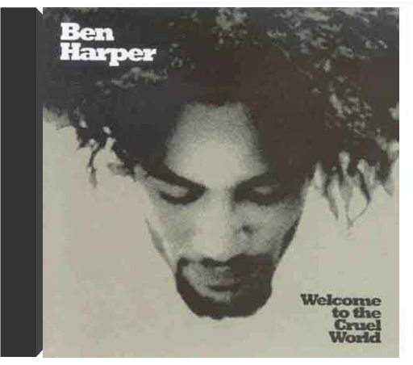
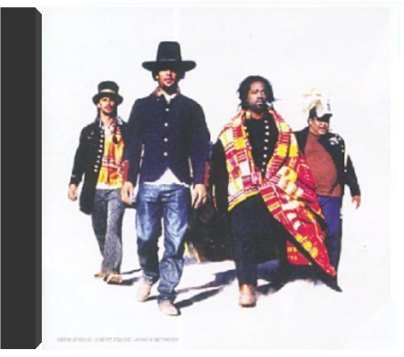

Si Abbey Road a conclu en beauté la malgré tout très courte carrière des Beatles (six, sept ans d'enregistrements, pas plus), il demeure aussi l'album où le groupe s'offre le plus dans toute sa diversité. Dominé bien sûr par une paire d'atouts maîtres, le carré d'as permet dans cet ultime chef-d'oeuvre de goûter par exemple la fraîcheur désinvolte de Ringo ("Octopus's Garden"). Ou la spiritualité émerveillée de Harrison. "Here Comes The Sun", malgré la candeur naïve de son texte, contient simplement parmi les arpèges de guitare les plus fondateurs. Et quand le guitariste Harrison tisse des notes d'amour, cela devient quelque chose - "Something" - d'éternel. Mais le coeur du disque, son noyau dur dirons-nous, c'est tout ce que mettent dans la corbeille les rivaux indissociables Lennon et McCartney. Ils inventent là l'usage du synthétiseur ("Because"), et tandis que Lennon étale son irréductible cuir rock ("Come Together"), Macca répond avec "Maxwell's Silver Hammer", manière de l'énerver un peu. L'histoire dit qu'il y parvint (et que Lennon détestait cette chanson). L'auditeur, lui, contemple, béat, la joute musicale. Et savourera encore longtemps les "Because" et "Oh Darling" livrés ici en pâture. L'un des deux meilleurs albums des Beatles. —José Ruiz  Même sous forme de disque compact cet album a deux faces : celle des gentils Beatles, rois de la mélodie facile et celle plus sombre, cachée jusqu'alors, des Beatles psychédéliques, expérimentateurs et habitués des paradis artificiels. La face heureuse et insouciante c'est celle de McCartney qui aligne ici quelques classiques élégants : "Eleanor Rigby" et ses cordes classiques, "Here, There And Everywhere" avec sa mélodie dans le style music- hall ou "Got To Get You Into My Life, proche de la grande variété américaine. Mais la palme de la légèreté revient, évidemment, à Ringo Starr qui chante de sa voix bonhomme "Yellow Submarine", devenu un classique de la chanson pour enfants. La face sombre, vous l'aurez deviné, c'est celle de Lennon qui raconte, ici, ses rêves et ses hallucinations : la dérive psychédélique avec guitares à l'envers de "She Said She Said", le rock cynique "Dr Robert" sur un faux médecin dealer. Et puis, surtout, il y a "Tomorrow Never Knows", summum de l'expérimentation, jamais égalé mais souvent copié (cf les Chemical Brothers et Noel Gallagher avec "Setting Sun"). Orchestre à l'envers, boucle de batterie dance avant l'heure, vocaux saturés, résonance de sitar continue : les nouveaux Beatles naissent vraiment avec ce morceau. Ils sont prêts pour les aventures à venir : "Strawberry Fields Forever" et Sgt Pepper's. —Hubert Deshouse  Quand Rubber Soul s'ouvre sur "Drive My Car", on est en terrain connu : les Beatles jouent une chanson pop parfaite de deux minutes trente. Ce qui, on l'avouera aisément, n'est déjà pas si mal ! Puis arrive "Norvegian Wood", une folk song à la mélodie sinueuse embellie par un sitar indien ! Là, d'un seul coup, on se trouve à des années-lumière de "She Loves You" et de "Love Me Do" ! Les Beatles de 1965 s'émancipent des règles du marché : refrain en français et arpèges jazzy sur "Michelle", solo de piano baroque sur "In My Life"... Cet affranchissement, qui va culminer sur Sgt. Pepper's et sur le Double Blanc, n'en est qu'à ses prémices mais il donne déjà des merveilles. —Hubert Deshouse  La première fois qu'Éric a entendu Sgt Pepper's Lonely Hearts Club Band, c'était sur un mini K7, pour sa communion... Micky, lui, était batteur dans le Vaucluse et, en rentrant, du Discobole, il a passé six heures d'affilée à essayer de rejouer l'intro de "Sgt. Pepper's Lonely Hearts Club Band (Reprise)". Ça n'avait l'air de rien, pourtant il n'y arrivait pas... Une fille l'avait prêté à Benoît; le disque sautait sans arrêt mais en rajoutant une pièce de cinq centimes sur le saphir ça passait... Mick et Keith l'ont écouté ensemble et ça leur a un peu mis les boules... Pascal, c'était dans un restaurant ; il n'écoutait que du punk et de la new wave mais, quand même, ça lui rappelait quelque chose. Il est allé l'acheter en sortant du restaurant... Adèle, c'était chez son fiancé, un matin de mai, ça sentait le lilas. Son amoureux pleurait chaque fois qu'il écoutait la voix de Lennon sur le début de "Lucy In The Sky With Diamonds"... Brian, l'a écouté dans son salon, assis dans le sable. Il a aussitôt appelé ses frères et son cousin pour enregistrer une version de "With A Little Help From My Friends"... Et vous ? —Hubert Deshouse  welcome to the cruel worldben harper Bien qu'adoptant un style (le blues) largement familier au public, Ben Harper fit en sorte dès ce premier album de l'aborder avec une fraîcheur et une inventivité bouleversante. De telle sorte que très vite, cette musique balisée devint entre ses doigts un hybride, évoluant vers des genres étrangers. Ben Harper fonde Welcome To The Cruel World sur un travail remarquable à la guitare slide, qu'il va soutenir d'une voix capable de métamorphoses étonnantes, un peu à la manière d'Aaron Neville ("Breakin'Down") en montant dans les aigus pour mieux jouer du vibrato. Cette guitare, un dobro ou une Weissenborn, investit l'espace sonore en compagnie de percussions caractéristiques, ceci pour habiller les chansons de révolte de cet artiste en colère, à la frontière de l'imprécation mystique. Harper est capable d'une déroutante versatilité, au détour d'un thème sobre ("Waiting On An Angel") il va se montrer bouleversant de proximité, l'instant d'après il capte une rythmique entre cajun et reggae. Ainsi, au fil des titres, l'album s'avère d'une grande richesse. Il signalait un artiste doté d'un potentiel considérable. La chose fut vérifiée par la suite. —José Ruiz  Lentement, paisiblement, sans tapage, Ben Harper s'est transformé en artiste-culte. Presque en gourou d'une génération. Dès ce deuxième album paru en 1995, il marquait son territoire artistique. Il balisait ainsi un champ musical plutôt très étendu, alors que le corps de son style se trouvait autour du blues. Mais ce Fight For Your Mind ne peut se résumer aux douze mesures. Tout au plus les guitares qu'il joue renvoient-elles à l'héritage des anciens. Mais tout le reste, et son message à cet égard est édifiant, dépasse largement du corset bluesy. On trouve, au contraire, dans ce CD l'exigence d'un musicien en quête d'expériences. De rencontres fertiles. Il va utiliser les percussions africaines et asiatiques. Il va réunir les choristes américains. Il va aussi proclamer sa foi en Dieu et en l'amour. Mais malgré ses intentions pacifiques, Ben Harper manie l'overdrive quand les circonstances l'exigent. Alors les guitares grincent et la batterie pilonne. Jusqu'à ce qu'à nouveau, tablas et congas installent, avec les cordes devenues acoustiques, le climat d'une nouvelle confidence, plus folk cette fois. C'est d'ailleurs dans cet entourage chaud et complice que le chanteur paraît le plus chez lui. Pour ses textes révoltés, aussi pour ses rythmiques puissantes mais sobres, Ben Harper évoque Marley. Et dans l'étirement largué de "God Fearing Man", on pense aussi à un Neil Young un peu mystique. C'est vrai que cet homme est "différent"... —José Ruiz  En ouvrant son troisième album par un titre aussi brutal que "Faded", confidence sèche et électrique, Ben Harper donnait le ton du disque. Cet album allait le consacrer auprès du public français, qui adoptait en lui un chanteur au profil pétri d'humanité. Ben Harper paraît fragile, sa voix crie ou pleure l'injustice et la cruauté dans un monde hostile. Il s'écarte peu à peu du blues acoustique des débuts, pour s'intéresser à d'autres registres, plus proches du rock énergique, du funk avec "Mama's Trippin", et du reggae avec "Jah Work". Pourtant ses racines demeurent solidement plantées dans un sol qu'il sait rendre fertile. D'où la toujours passionnante aventure qu'il mène à partir de l'ingrédient blues, dans "The Will To Live" ou "I Want To Be Ready". C'est en effet grâce à l'utilisation combinée des guitares acoustiques et électrifiées qu'il met à jour - aidé par une rythmique inaltérable - son style, désormais maîtrisé et inimitable. —José Ruiz |  burn to shineben harper Depuis son premier CD, Ben Harper a bougé. Sa voix s'inscrit dans une filiation où Marley et Hendrix rejoignent Otis Redding, dans "Show Me Little Shame". Manifestement, Harper s'amuse tout au long des douze plages, fouinant ici avec une prière rude, "The Woman In You", pour s'assagir ensuite dans un plus paisible "Forgiven". Là, c'est avec le Ben Harper des premiers albums que l'on a rendez-vous, quand le blues du Delta était encore au coin de la rue. Alors Ben appuie sur la pédale wah wah. Un solo d'évidence s'échappe, Hendrix en aurait béni chaque note. En route, nous aurons croisé l'histoire des "Suzie Blue" dans un bouge dixieland, goûté un air de campagne avec le très country "In The Lord's Arms", puis flirté inévitablement avec un groove hip hop, "Steal My Kisses", pour sceller le funk et un album qui défiera sans doute les fans. Ils pourront cependant l'aborder en confiance. —José Ruiz  Ben Harper ne tient pas au tape-à-l'oeil, au clinquant, à l'accessoire. C'est cette sobriété dans l'expression et la présentation de soi qui lui a valu une bonne partie de son succès à partir du milieu des années 90. Prophète des charts aux solos façon Hendrix rassasié, l'Américain a déroulé un répertoire blues-rock chanté d'une voix plaintive propre à séduire un jeune public avide d'authenticité. Ce double live arrive donc à point nommé.  On entend cette voix comme un sanglot. On entend des doigts qui glissent pour caresser les cordes. C’est Ben Harper qui chante, avec tout le cœur que peut mettre un homme dans une création artistique. La chanson s’appelle "Amen One" ou "With My Own Two Hands", et c’est un poème divin qu’a choisi d’entonner le chanteur-guitariste. Une sorte de gospel du futur, un cri qui passe et qui continue, qui vient de loin déjà. C’est même au fond de l’Afrique qu’il a trouvé les intonations de "Picture Of Jesus" avec Lady Smith Black Mambazo, ce chœur d’hommes bouleversant qui lui répond. Toujours tendu vers toutes les sources de sa musique, avec intelligence il alimente des plages entières au funk millésimé ("Brown Eyed Blues"), jouant d’un groove redoutable à la pédale wah-wah. Et comme Ben Harper est un faux calme, un paisible qui attend son heure, quand surgit l’intro de "So High So Low", on se retrouve levé du fauteuil par la puissance et la rage de l’assaut. Difficile de ne pas sentir très vite, à l’écoute de ces chansons d’esprit et de corps, toute la complexité d’un homme en quête perpétuelle. Il a déjà trouvé avec ce sixième album, entre folk chargé d’âme et rock sans frontières. —José Ruiz  Bénabar a laissé à ses associés La P'tite Monnaie mais continue à présenter sa collection dinstantanés drôles et lucides, vignettes arrachées à sa vie de "Petit trentenaire". Digne héritier des Higelin, Renaud, Aznavour, Brassens ou Brel, Bénabar – du nom de clown Barnabé en verlan –, Bruno dans le civil, a été adopté par Henri Salvador. Sil traîne toujours sa désinvolture et son autodérision sur un air de fanfare de cuivres et daccordéon, Bénabar découvre Les Risques du métier et se laisse parfois aller à la mélancolie en fêtant la retraite de "M. René" ou en sattardant sur la jeunesse évanouie de "La Coquette". Mais son piano bastringue saccorde mieux aux histoires ironiques de ce cousin de Sansévérino ou de Thomas Fersen, qui vadrouille entassé en voiture avec ses six copains "LItinéraire", fouille dans le "Sac à main" de sa bien-aimée et part en vacances avec sa petite famille en "Monospace". Bénabar, un héros de proximité. —Sabrina Silamo  Drôle de nom que celui de ce type qui s'amuse à nous inventer de sympathiques historiettes. Bénabar (pseudo verlan qui fait référence au clown Barnabé), de son prénom Bruno, a choisi pour ce deuxième acte, de conter les "vicissitudes" de l'existence avec une pincée d'autodérision et d'humour fantaisiste. Telles des courts-métrages (il en a d'ailleurs réalisé trois), ses chansons en noir et blanc – parfois en couleurs – défilent sur des rythmes frénétiques soutenus par une fanfaronnade de cuivres. Parfois l'accordéon vient calmer le jeu sur les airs du désopilant "Bon anniversaire". Mais la folie douce reprend de plus belle lorsque l' ex- célibataire de "Y'a une fille qu'habite chez moi" constate avec effroi les ravages causés par la vie en couple. De l'amoureux amer de "La Majorette", à ce gamin de 5 ans affrontant l' humiliation d'un "vélo" récalcitrant, personne n'échappe au petit monde imagé de Bénabar. —Valérie Dupouy |

Julien
Collection Total:
1 901 Items
1 901 Items
Last Updated:
Nov 1, 2021
Nov 1, 2021

 Made with Delicious Library
Made with Delicious Library